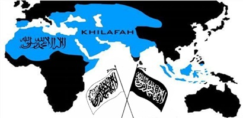

Introductie
↪1.Inleiding 1.1 Title 1.2 Title 1.3 Title ↳2.Cartografisch voorbeelden 2.1 Title 2.2 Title 2.3 Title ↳3.Wie is een moderne kaartenmaker? 3.1 Inleiding cartografische ontwikkelingen 3.2 Geografische Informatie Systemen 3.3 De cartograaf 3.4 De (moderne) kaartenmaker 3.5 De grafisch ontwerper 3.6 Media: Dynamische Informatie Maatschappij ↪4.Hoe lever je kritiek [critique]? 4.1 Wat is een (cartografische) critique? ↪5.Conclusie ↪6.Bibliography
Introductie
Begin november in 2010 had Nicaraguaans ambtenaar Edén Pastora de taak een deel van de rivier Rio San Juan droog te baggeren. Dit gebied grenst aan het buurland Costa Rica. Bij het uitzoeken van het droog te leggen gebied, en dus de landsgrenzen, gebruikte en refereerde hij de informatie van Google Maps om te beargumenteren dat het Nicaraguaans grondgebied was. “See Google’s satellite photo, and there you see the border.”1
Later bleek dat dit Costa Ricaans grondgebied was, en dat de online atlas de landsgrenzen verkeerd aangaf. De ‘verschoven’ landgrens verschilde enkele vierkant kilometers met de werkelijkheid. Uiteindelijk resulteerde de keuze van E. Pastora voor politiek conflict en de verhoogde gespannen situatie tussen Nicaragua en Costa Rica. Desalniettemin droeg de (niet)aanduiding van landsgrenzen door Google daar natuurlijk ook indirect aan bij.
Hoewel de gemoederen hoog opliepen en menig excuus werd gemaakt en het met een sisser afliep,
 Galvão, Henrique (1934). Portugal N'est Pas Un Petit Pays (Portugal is Not A Small Country). Persuasive Maps: PJ Mode Collection.
laat het wel duidelijk zien dat kaartenmakers en platformen die kaarten aanbieden de nodige verantwoordelijkheid moeten uitoefenen in hun praktijk. Het publiek neemt gepubliceerde informatie vrij snel als waar aan. Zo positioneert de lezer zich kwetsbaar en dus beïnvloedbaar.
Galvão, Henrique (1934). Portugal N'est Pas Un Petit Pays (Portugal is Not A Small Country). Persuasive Maps: PJ Mode Collection.
laat het wel duidelijk zien dat kaartenmakers en platformen die kaarten aanbieden de nodige verantwoordelijkheid moeten uitoefenen in hun praktijk. Het publiek neemt gepubliceerde informatie vrij snel als waar aan. Zo positioneert de lezer zich kwetsbaar en dus beïnvloedbaar.
Cartografie is een werkveld waar keuzes gemaakt worden waar lezers grote en gevoelige meningen door vormen. Wanneer cartografen keuzes maken, beïnvloeden ze de interpretatie van de kaart, en hierdoor kunnen meningen en dus standpunten en overtuigingen van lezers beïnvloed worden en nodig emotie teweeg brengen. Wanneer het publiek, en minderheid of een groep mensen van mening verschilt met de staat, of een andere groep mensen kunnen ze er voor kiezen te protesteren en hun mening verspreiden. Dit kan uitmonden in gevaarlijke protesten waarbij meerdere partijen gewonden raken. Volgens mij hoef ik hier geen voorbeelden te geven.
Veel internationale nieuwskanalen kwamen met krantenkoppen zoals ‘The First Google Maps War - The New York Times’2, ’21st Century War: Google Maps Error Leads to Nicaraguan Invasion’3, ‘Google maps error sparks invasion of Costa Rica by Nicaragua’4, en ‘Google Nicaraguan map error threatens to escalate into regional dispute’.5
In dit onderzoek is gezocht naar een antwoord Hizb Al Tahrirs presence worldwide Photo: Source.op de vraag: ‘Hoe beïnvloeden grafische elementen op kaarten de interpretatie van de lezer, en wat kunnen we hier tegen beginnen?’. Hiervoor is een kwalitatief onderzoek uitgevoerd naar uitéénlopende type kaarten en hun voornaamste grafische elementen en hoe deze de interpretatie van de lezer kunnen beïnvloeden.
Conclusie
In dit onderzoek is gezocht naar een antwoord op de vraag: ‘Hoe beïnvloeden grafische elementen op kaarten de interpretatie van de lezer, en wat kunnen we hier tegen beginnen?’. Hiervoor is een kwalitatief onderzoek uitgevoerd naar uitéénlopende type kaarten en hun voornaamste grafische elementen en hoe deze de interpretatie van de lezer kunnen beïnvloeden.
Uit het onderzoek is gebleken dat projecties veelvuldig zijn gebruikt om het verhaal van de kaart te versterken. Daarnaast is gebleken dat verschillende projecties uitéénlopende karakteristieken hebben met sociale en maatschappelijke consequenties. Ook is gebleken dat we niet kunnen ontspannen aan die voor- en nadelen van die projecties, en we dus een doordachte keuze moeten maken die aansluit bij het narratief van de kaart.
Bibliography
1 Edén Pastora, (3 november 2010). La draga la financia el ALBA en Venezuela. Toegang op 23 oktober 2017 via http://www.nacion.com/archivo/draga-financia-ALBA-Venezuela_0_1156884440.html 2 Harley, J. B. (1989). Deconstructing the Map. Reprinted from Cartographica. V. 26, n. 2 (Spring 1989). Via Michigan Publishing, University of Michigan Library. Toegang op 5 december 2017 via http://hdl.handle.net/2027/spo.4761530.0003.008
 Hizb Al Tahrirs presence worldwide Photo: Source.